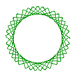
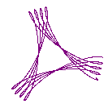
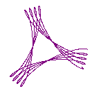
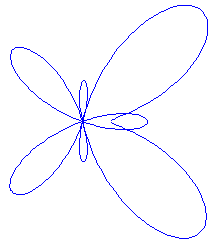
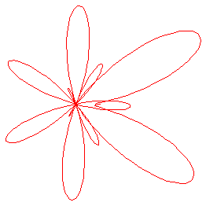
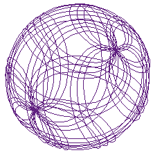
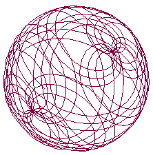

Hans Mikelson
Introduction
Parametric equations used in generating polar graphs are also useful in generating interesting sounds. These curves make interesting sound sources for synthesis because they typically have a variety of parameters which can be modulated. Since there are two or more outputs they naturally generate stereo signals.
Cycloids
Cycloid curves, sometimes called trochoids, are created by a circle rotating inside or outside of another circle. Cycloid curves were made popular by Hasbro's game Spirograph which consisted of various disks with gear teeth on the edges. A pen was used to trace the curve of the cycloid through holes in the disks. The parametric equations defining these curves are:
Where a is the radius of the stationary circle and b is the radius of the rotating circle. If s is +1 it represents a circle rotating outside another circle and if s is -1 it represents a circle rotating inside of the other circle. The parameter h represents the point on the rotating disk from which the curve is traced. This would correspond to the hole in a Spirograph game although in this case the "hole" can extend beyond the radius of the rotating circle.

Figure 1 Diagram of a cycloid
Some of the curves possible with this type of system follow:
  

Figure 2 Four different cycloid curves
This system can be implemented in Csound as:
; Sine and Cosine acos1 oscil ia+ib*isgn, afqc, 1, .25 acos2 oscil ib*ihole, (ia-ib)/ib*afqc, 1, .25 ax = acos1 + acos2 asin1 oscil ia+ib*isgn, afqc, 1 asin2 oscil ib*ihole, (ia-ib)/ib*afqc, 1 ay = asin1 - asin2
The x and y values are then output as the left and right channels to create the tone. This sound works well with pitch effects like portamento, vibrato, pitch envelopes and pitch bending.
Butterfly Curves
Butterfly cureves look a little like a butterfly in shape. Butterfly curves are generated by the following equations:

 
Figure 1. Butterfly Curve a=2, b=4, c=5, d=12 and a=2.1, b=6, c=7, d=30
This can be implemented in Csound as:
; Cosines acos1 oscil 1, ifqc, 1, .25 acos2 oscil ia, kb*ifqc, 1, .25 acos3 oscil 1, ifqc/kd, 1, .25 ; Sines asin2 pow asin1, ic asin3 oscil 1, ifqc/kd, 1 arho = exp(ie*acos1)-acos2+asin2 ax = arho*acos3 ay = arho*asin3
Using a very low frequency for the cos3 and sin3 terms above results in a slowly evolving stereo image.
Spherical Lissajous Curves
The next system considered is the spherical lissajous curve. The image on the cover of this magazine is a spherical lissajous curve. The following equations define this curve:

 
Figure 3. Spherical lissajous curves
The Csound code to implement this is:
; Cosines acosu oscil 1, iu*ifqc, 1, .25 acosv oscil 1, iv*ifqc, 1, .25 ; Sines asinu oscil 1, iu*ifqc, 1 asinv oscil 1, iv*ifqc, 1 ; Compute X and Y ax = iradius*asinu*acosv ay = iradius*asinu*asinv az = iradius*acosu
This function generates a variety of complex bell-like tones.
Conclusions
Parametric equations form broad class of synthesis methods which are largely unavailable in traditional hardware synthesizers. They allow for a great number of modulation possibilities. It should be possible to generate a large number of similar curves for additional synthesis algorithms.
References
Pickover, Clifford. 1991. Computers and the Imagination.
St. Martin's Press.Anton, Howard. 1980. Calculus. John Wiley and Sons.